from preamble import *
import koreanize_matplotlib
plt.rcParams['image.cmap'] = "gray"비지도학습
비지도학습
mglearn.plots.plot_scaling()여러가지 전처리 방법
데이터 변환 적용하기
from sklearn.datasets import load_breast_cancer
from sklearn.model_selection import train_test_split
cancer = load_breast_cancer()
X_train, X_test, y_train, y_test = train_test_split(cancer.data, cancer.target,
random_state=1)
print(X_train.shape)
print(X_test.shape)(426, 30)
(143, 30)from sklearn.preprocessing import MinMaxScaler
scaler = MinMaxScaler()scaler.fit(X_train)MinMaxScaler()In a Jupyter environment, please rerun this cell to show the HTML representation or trust the notebook.
On GitHub, the HTML representation is unable to render, please try loading this page with nbviewer.org.
MinMaxScaler()
# 데이터 변환
X_train_scaled = scaler.transform(X_train)
# 스케일이 조정된 후 데이터셋의 속성을 출력합니다
print("변환된 후 크기:", X_train_scaled.shape)
print("스케일 조정 전 특성별 최소값:\n", X_train.min(axis=0))
print("스케일 조정 전 특성별 최대값:\n", X_train.max(axis=0))
print("스케일 조정 후 특성별 최소값:\n", X_train_scaled.min(axis=0))
print("스케일 조정 후 특성별 최대값:\n", X_train_scaled.max(axis=0))변환된 후 크기: (426, 30)
스케일 조정 전 특성별 최소값:
[ 6.981 9.71 43.79 143.5 0.053 0.019 0. 0. 0.106
0.05 0.115 0.36 0.757 6.802 0.002 0.002 0. 0.
0.01 0.001 7.93 12.02 50.41 185.2 0.071 0.027 0.
0. 0.157 0.055]
스케일 조정 전 특성별 최대값:
[ 28.11 39.28 188.5 2501. 0.163 0.287 0.427 0.201
0.304 0.096 2.873 4.885 21.98 542.2 0.031 0.135
0.396 0.053 0.061 0.03 36.04 49.54 251.2 4254.
0.223 0.938 1.17 0.291 0.577 0.149]
스케일 조정 후 특성별 최소값:
[0. 0. 0. 0. 0. 0. 0. 0. 0. 0. 0. 0. 0. 0. 0. 0. 0. 0. 0. 0. 0. 0. 0. 0.
0. 0. 0. 0. 0. 0.]
스케일 조정 후 특성별 최대값:
[1. 1. 1. 1. 1. 1. 1. 1. 1. 1. 1. 1. 1. 1. 1. 1. 1. 1. 1. 1. 1. 1. 1. 1.
1. 1. 1. 1. 1. 1.]# 테스트 데이터 변환
X_test_scaled = scaler.transform(X_test)
# 스케일이 조정된 후 테스트 데이터의 속성을 출력합니다
print("스케일 조정 후 특성별 최소값:\n", X_test_scaled.min(axis=0))
print("스케일 조정 후 특성별 최대값:\n", X_test_scaled.max(axis=0))스케일 조정 후 특성별 최소값:
[ 0.034 0.023 0.031 0.011 0.141 0.044 0. 0. 0.154 -0.006
-0.001 0.006 0.004 0.001 0.039 0.011 0. 0. -0.032 0.007
0.027 0.058 0.02 0.009 0.109 0.026 0. 0. -0. -0.002]
스케일 조정 후 특성별 최대값:
[0.958 0.815 0.956 0.894 0.811 1.22 0.88 0.933 0.932 1.037 0.427 0.498
0.441 0.284 0.487 0.739 0.767 0.629 1.337 0.391 0.896 0.793 0.849 0.745
0.915 1.132 1.07 0.924 1.205 1.631]훈련 데이터와 테스트 데이터의 스케일을 같은 방법으로 조정하기
matplotlib 3.0 버전에서는 scatter 함수에 색깔을 지정할 때 하나의 RGB 포맷 문자열이나 Colormap의 리스트를 지정해야 합니다. 경고를 피하기 위해 mglearn에서 만든 ListedColormap 객체의 colors 속성의 원소를 직접 선택하여 RGB 포맷 문자열을 지정합니다.
from sklearn.datasets import make_blobs
# 인위적인 데이터셋 생성
X, _ = make_blobs(n_samples=50, centers=5, random_state=4, cluster_std=2)
# 훈련 세트와 테스트 세트로 나눕니다
X_train, X_test = train_test_split(X, random_state=5, test_size=.1)
# 훈련 세트와 테스트 세트의 산점도를 그립니다
fig, axes = plt.subplots(1, 3, figsize=(13, 4))
axes[0].scatter(X_train[:, 0], X_train[:, 1],
c=mglearn.cm2.colors[0], label="훈련 세트", s=60)
axes[0].scatter(X_test[:, 0], X_test[:, 1], marker='^',
c=mglearn.cm2.colors[1], label="테스트 세트", s=60)
axes[0].legend(loc='upper left')
axes[0].set_title("원본 데이터")
# MinMaxScaler를 사용해 스케일을 조정합니다
scaler = MinMaxScaler()
scaler.fit(X_train)
X_train_scaled = scaler.transform(X_train)
X_test_scaled = scaler.transform(X_test)
# 스케일이 조정된 데이터의 산점도를 그립니다
axes[1].scatter(X_train_scaled[:, 0], X_train_scaled[:, 1],
c=mglearn.cm2.colors[0], label="훈련 세트", s=60)
axes[1].scatter(X_test_scaled[:, 0], X_test_scaled[:, 1], marker='^',
c=mglearn.cm2.colors[1], label="테스트 세트", s=60)
axes[1].set_title("스케일 조정된 데이터")
# 테스트 세트의 스케일을 따로 조정합니다
# 테스트 세트의 최솟값은 0, 최댓값은 1이 됩니다
# 이는 예제를 위한 것으로 절대로 이렇게 사용해서는 안됩니다
test_scaler = MinMaxScaler()
test_scaler.fit(X_test)
X_test_scaled_badly = test_scaler.transform(X_test)
# 잘못 조정된 데이터의 산점도를 그립니다
axes[2].scatter(X_train_scaled[:, 0], X_train_scaled[:, 1],
c=mglearn.cm2.colors[0], label="training set", s=60)
axes[2].scatter(X_test_scaled_badly[:, 0], X_test_scaled_badly[:, 1],
marker='^', c=mglearn.cm2.colors[1], label="test set", s=60)
axes[2].set_title("잘못 조정된 데이터")
for ax in axes:
ax.set_xlabel("특성 0")
ax.set_ylabel("특성 1")
fig.tight_layout()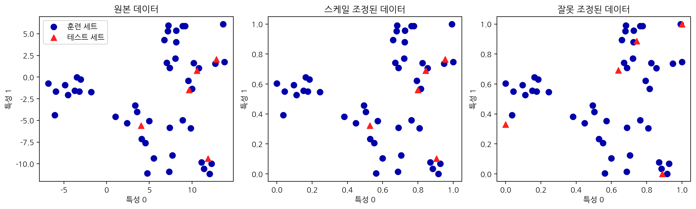
from sklearn.preprocessing import StandardScaler
scaler = StandardScaler()
# 메소드 체이닝(chaining)을 사용하여 fit과 transform을 연달아 호출합니다
X_scaled = scaler.fit(X_train).transform(X_train)
# 위와 동일하지만 더 효율적입니다
X_scaled_d = scaler.fit_transform(X_train)지도 학습에서 데이터 전처리 효과
사이킷런 0.20 버전에서 SVC 클래스의 gamma 매개변수 옵션에 auto외에 scale이 추가되었습니다. auto는 1/n_features, 즉 특성 개수의 역수입니다. scale은 1/(n_features * X.std())로 스케일 조정이 되지 않은 특성에서 더 좋은 결과를 만듭니다. 사이킷런 0.22 버전부터는 gamma 매개변수의 기본값이 auto에서 scale로 변경됩니다. 서포트 벡터 머신을 사용하기 전에 특성을 표준화 전처리하면 scale과 auto는 큰 차이가 없습니다.
from sklearn.svm import SVC
X_train, X_test, y_train, y_test = train_test_split(cancer.data, cancer.target,
random_state=0)
svm = SVC(gamma='auto')
svm.fit(X_train, y_train)
print("테스트 세트 정확도: {:.2f}".format(svm.score(X_test, y_test)))테스트 세트 정확도: 0.63# 0~1 사이로 스케일 조정
scaler = MinMaxScaler()
scaler.fit(X_train)
X_train_scaled = scaler.transform(X_train)
X_test_scaled = scaler.transform(X_test)
# 조정된 데이터로 SVM 학습
svm.fit(X_train_scaled, y_train)
# 스케일 조정된 테스트 세트의 정확도
print("스케일 조정된 테스트 세트의 정확도: {:.2f}".format(svm.score(X_test_scaled, y_test)))스케일 조정된 테스트 세트의 정확도: 0.95# 평균 0, 분산 1을 갖도록 스케일 조정
from sklearn.preprocessing import StandardScaler
scaler = StandardScaler()
scaler.fit(X_train)
X_train_scaled = scaler.transform(X_train)
X_test_scaled = scaler.transform(X_test)
# 조정된 데이터로 SVM 학습
svm.fit(X_train_scaled, y_train)
# 스케일 조정된 테스트 세트의 정확도
print("SVM 테스트 정확도: {:.2f}".format(svm.score(X_test_scaled, y_test)))SVM 테스트 정확도: 0.97import matplotlib.pyplot as plt
import numpy as np
from sklearn.datasets import make_blobs
from sklearn.preprocessing import QuantileTransformer, StandardScaler, PowerTransformerX, y = make_blobs(n_samples=50, centers=2, random_state=4, cluster_std=1)
X += 3
plt.scatter(X[:, 0], X[:, 1], c=y, s=30, edgecolors='black')
plt.xlim(0, 16)
plt.xlabel('x0')
plt.ylim(0, 10)
plt.ylabel('x1')
plt.title("Original Data")
plt.show()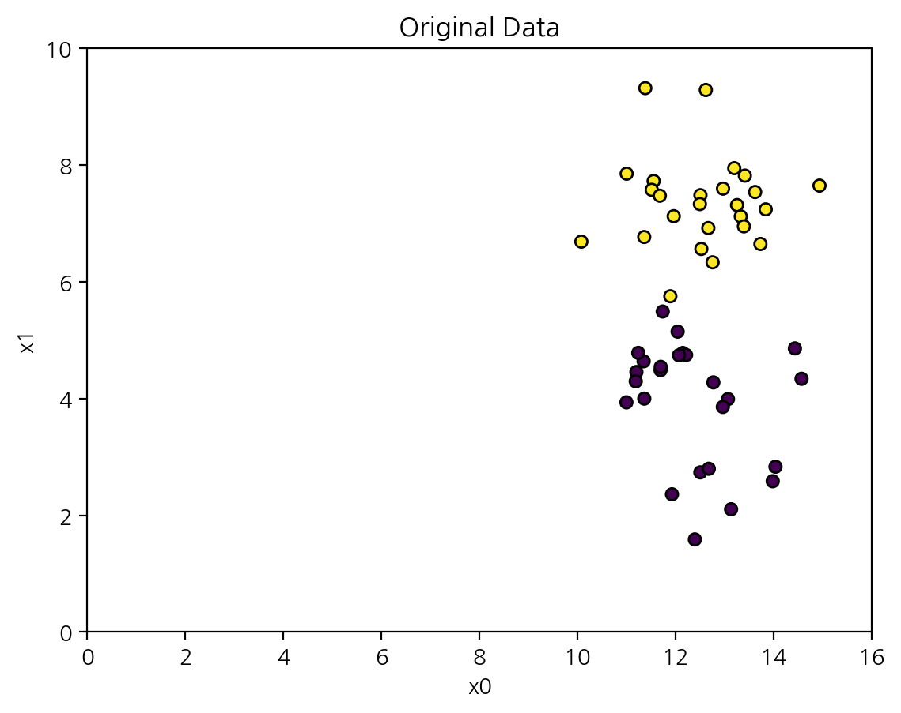
scaler = QuantileTransformer(n_quantiles=50)
X_trans = scaler.fit_transform(X)
plt.scatter(X_trans[:, 0], X_trans[:, 1], c=y, s=30, edgecolors='black')
plt.xlim(0, 5)
plt.xlabel('x0')
plt.ylim(0, 5)
plt.ylabel('x1')
plt.title(type(scaler).__name__)
plt.show()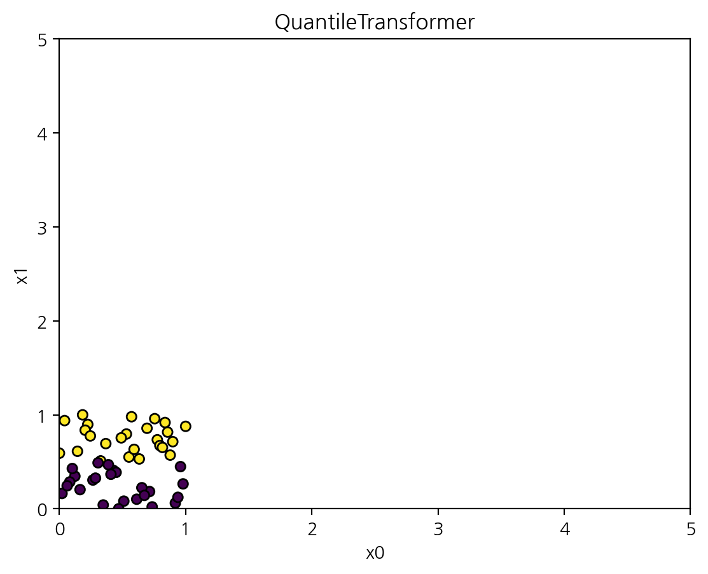
plt.hist(X_trans)
plt.show()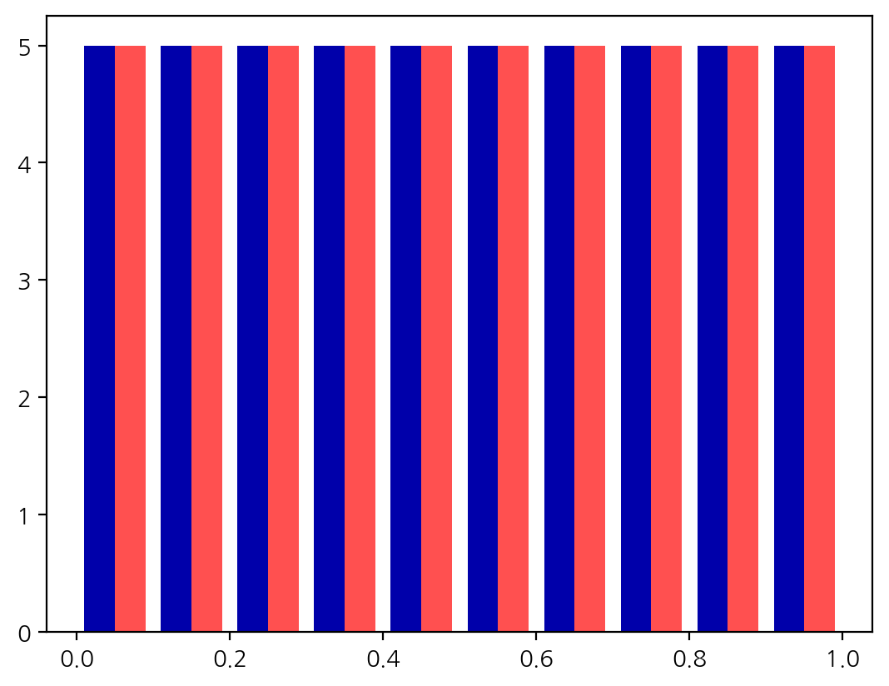
print(scaler.quantiles_.shape)(50, 2)x = np.array([[0], [5], [8], [9], [10]])
print(np.percentile(x[:, 0], [0, 25, 50, 75, 100]))[ 0. 5. 8. 9. 10.]x_trans = QuantileTransformer(n_quantiles=5).fit_transform(x)
print(np.percentile(x_trans[:, 0], [0, 25, 50, 75, 100]))[0. 0.25 0.5 0.75 1. ]scaler = QuantileTransformer(n_quantiles=50, output_distribution='normal')
X_trans = scaler.fit_transform(X)
plt.scatter(X_trans[:, 0], X_trans[:, 1], c=y, s=30, edgecolors='black')
plt.xlim(-5, 5)
plt.xlabel('x0')
plt.ylim(-5, 5)
plt.ylabel('x1')
plt.title(type(scaler).__name__)
plt.show()plt.hist(X)
plt.title('Original Data')
plt.show()
X_trans = QuantileTransformer(n_quantiles=50, output_distribution='normal').fit_transform(X)
plt.hist(X_trans)
plt.title('QuantileTransformer')
plt.show()
X_trans = StandardScaler().fit_transform(X)
plt.hist(X_trans)
plt.title('StandardScaler')
plt.show()
X_trans = PowerTransformer(method='box-cox').fit_transform(X)
plt.hist(X_trans)
plt.title('PowerTransformer box-cox')
plt.show()
X_trans = PowerTransformer(method='yeo-johnson').fit_transform(X)
plt.hist(X_trans)
plt.title('PowerTransformer yeo-johnson')
plt.show()
from sklearn.preprocessing import SplineTransformer
X_trans = SplineTransformer().fit_transform(X)
plt.hist(X_trans)
plt.title('SplineTransformer')
plt.show()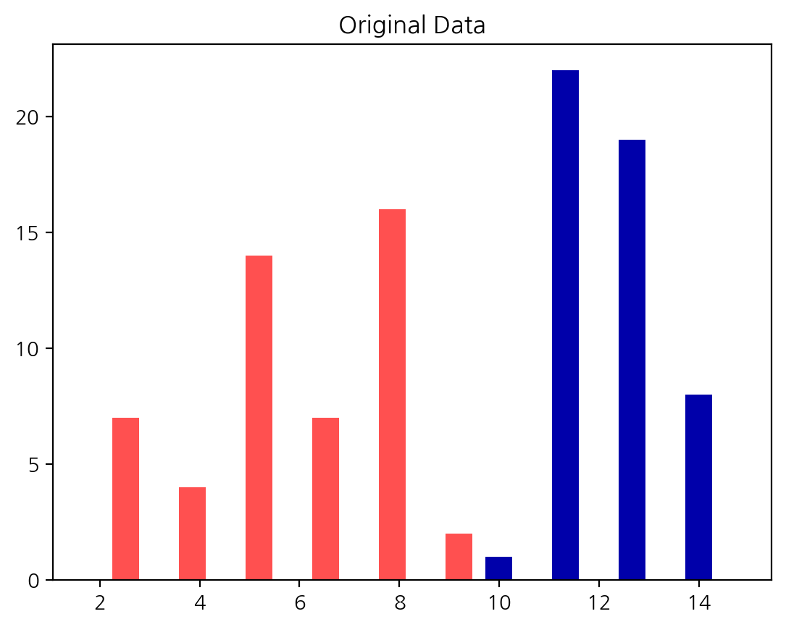
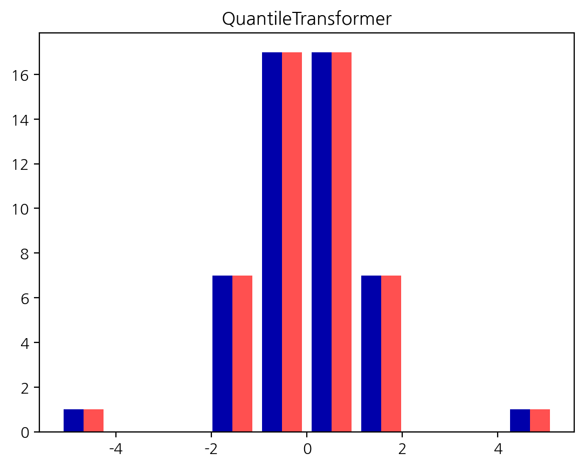
차원 축소, 특성 추출, 매니폴드 학습
주성분 분석 (PCA)
mglearn.plots.plot_pca_illustration()PCA 적용해 유방암 데이터셋 시각화하기
fig, axes = plt.subplots(15, 2, figsize=(10, 20))
malignant = cancer.data[cancer.target == 0]
benign = cancer.data[cancer.target == 1]
ax = axes.ravel()
for i in range(30):
_, bins = np.histogram(cancer.data[:, i], bins=50)
ax[i].hist(malignant[:, i], bins=bins, color=mglearn.cm3(0), alpha=.5)
ax[i].hist(benign[:, i], bins=bins, color=mglearn.cm3(2), alpha=.5)
ax[i].set_title(cancer.feature_names[i])
ax[i].set_yticks(())
ax[0].set_xlabel("특성 크기")
ax[0].set_ylabel("빈도")
ax[0].legend(["악성", "양성"], loc="best")
fig.tight_layout()from sklearn.datasets import load_breast_cancer
cancer = load_breast_cancer()
scaler = StandardScaler()
scaler.fit(cancer.data)
X_scaled = scaler.transform(cancer.data)from sklearn.decomposition import PCA
# 데이터의 처음 두 개 주성분만 유지시킵니다
pca = PCA(n_components=2)
# 유방암 데이터로 PCA 모델을 만듭니다
pca.fit(X_scaled)
# 처음 두 개의 주성분을 사용해 데이터를 변환합니다
X_pca = pca.transform(X_scaled)
print("원본 데이터 형태:", str(X_scaled.shape))
print("축소된 데이터 형태:", str(X_pca.shape))원본 데이터 형태: (569, 30)
축소된 데이터 형태: (569, 2)# 클래스를 색깔로 구분하여 처음 두 개의 주성분을 그래프로 나타냅니다.
plt.figure(figsize=(8, 8))
mglearn.discrete_scatter(X_pca[:, 0], X_pca[:, 1], cancer.target)
plt.legend(["악성", "양성"], loc="best")
plt.gca().set_aspect("equal")
plt.xlabel("첫 번째 주성분")
plt.ylabel("두 번째 주성분")
plt.show() # 책에는 없음print("PCA 주성분 형태:", pca.components_.shape)PCA 주성분 형태: (2, 30)print("PCA 주성분:", pca.components_)PCA 주성분: [[ 0.219 0.104 0.228 0.221 0.143 0.239 0.258 0.261 0.138 0.064
0.206 0.017 0.211 0.203 0.015 0.17 0.154 0.183 0.042 0.103
0.228 0.104 0.237 0.225 0.128 0.21 0.229 0.251 0.123 0.132]
[-0.234 -0.06 -0.215 -0.231 0.186 0.152 0.06 -0.035 0.19 0.367
-0.106 0.09 -0.089 -0.152 0.204 0.233 0.197 0.13 0.184 0.28
-0.22 -0.045 -0.2 -0.219 0.172 0.144 0.098 -0.008 0.142 0.275]]plt.matshow(pca.components_, cmap='viridis')
plt.yticks([0, 1], ["첫 번째 주성분", "두 번째 주성분"])
plt.colorbar()
plt.xticks(range(len(cancer.feature_names)),
cancer.feature_names, rotation=60, ha='left')
plt.xlabel("특성")
plt.ylabel("주성분")
plt.show() # 책에는 없음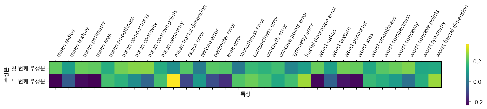
고유얼굴 특성 추출
from sklearn.datasets import fetch_lfw_people
people = fetch_lfw_people(min_faces_per_person=20, resize=0.7)
image_shape = people.images[0].shape
fig, axes = plt.subplots(2, 5, figsize=(15, 8), subplot_kw={'xticks': (), 'yticks': ()})
for target, image, ax in zip(people.target, people.images, axes.ravel()):
ax.imshow(image)
ax.set_title(people.target_names[target])people.target[0:10], people.target_names[people.target[0:10]](array([61, 25, 9, 5, 1, 10, 48, 17, 13, 54], dtype=int64),
array(['Winona Ryder', 'Jean Chretien', 'Carlos Menem', 'Ariel Sharon',
'Alvaro Uribe', 'Colin Powell', 'Recep Tayyip Erdogan',
'Gray Davis', 'George Robertson', 'Silvio Berlusconi'],
dtype='<U25'))print("people.images.shape:", people.images.shape)
print("클래스 개수:", len(people.target_names))people.images.shape: (3023, 87, 65)
클래스 개수: 62# 각 타깃이 나타난 횟수 계산
counts = np.bincount(people.target)
# 타깃별 이름과 횟수 출력
for i, (count, name) in enumerate(zip(counts, people.target_names)):
print("{0:25} {1:3}".format(name, count), end=' ')
if (i + 1) % 3 == 0:
print()Alejandro Toledo 39 Alvaro Uribe 35 Amelie Mauresmo 21
Andre Agassi 36 Angelina Jolie 20 Ariel Sharon 77
Arnold Schwarzenegger 42 Atal Bihari Vajpayee 24 Bill Clinton 29
Carlos Menem 21 Colin Powell 236 David Beckham 31
Donald Rumsfeld 121 George Robertson 22 George W Bush 530
Gerhard Schroeder 109 Gloria Macapagal Arroyo 44 Gray Davis 26
Guillermo Coria 30 Hamid Karzai 22 Hans Blix 39
Hugo Chavez 71 Igor Ivanov 20 Jack Straw 28
Jacques Chirac 52 Jean Chretien 55 Jennifer Aniston 21
Jennifer Capriati 42 Jennifer Lopez 21 Jeremy Greenstock 24
Jiang Zemin 20 John Ashcroft 53 John Negroponte 31
Jose Maria Aznar 23 Juan Carlos Ferrero 28 Junichiro Koizumi 60
Kofi Annan 32 Laura Bush 41 Lindsay Davenport 22
Lleyton Hewitt 41 Luiz Inacio Lula da Silva 48 Mahmoud Abbas 29
Megawati Sukarnoputri 33 Michael Bloomberg 20 Naomi Watts 22
Nestor Kirchner 37 Paul Bremer 20 Pete Sampras 22
Recep Tayyip Erdogan 30 Ricardo Lagos 27 Roh Moo-hyun 32
Rudolph Giuliani 26 Saddam Hussein 23 Serena Williams 52
Silvio Berlusconi 33 Tiger Woods 23 Tom Daschle 25
Tom Ridge 33 Tony Blair 144 Vicente Fox 32
Vladimir Putin 49 Winona Ryder 24 # np.bool은 1.20버전부터 deprecated됩니다. 대신 bool을 사용하세요.
mask = np.zeros(people.target.shape, dtype=bool)
for target in np.unique(people.target):
mask[np.where(people.target == target)[0][:50]] = 1
X_people = people.data[mask]
y_people = people.target[mask]
# 0~255 사이의 흑백 이미지의 픽셀 값을 0~1 사이로 스케일 조정합니다.
# (옮긴이) MinMaxScaler를 적용하는 것과 거의 동일합니다.
X_people = X_people / 255.from sklearn.neighbors import KNeighborsClassifier
# 데이터를 훈련 세트와 테스트 세트로 나눕니다
X_train, X_test, y_train, y_test = train_test_split(
X_people, y_people, stratify=y_people, random_state=0)
# 이웃 개수를 한 개로 하여 KNeighborsClassifier 모델을 만듭니다
knn = KNeighborsClassifier(n_neighbors=1)
knn.fit(X_train, y_train)
print("1-최근접 이웃의 테스트 세트 점수: {:.2f}".format(knn.score(X_test, y_test)))1-최근접 이웃의 테스트 세트 점수: 0.22mglearn.plots.plot_pca_whitening()pca = PCA(n_components=100, whiten=True, random_state=0).fit(X_train)
X_train_pca = pca.transform(X_train)
X_test_pca = pca.transform(X_test)
print("X_train_pca.shape:", X_train_pca.shape)X_train_pca.shape: (1547, 100)knn = KNeighborsClassifier(n_neighbors=1)
knn.fit(X_train_pca, y_train)
print("테스트 세트 정확도: {:.2f}".format(knn.score(X_test_pca, y_test)))테스트 세트 정확도: 0.30print("pca.components_.shape:", pca.components_.shape)pca.components_.shape: (100, 5655)fig, axes = plt.subplots(3, 5, figsize=(15, 12),
subplot_kw={'xticks': (), 'yticks': ()})
for i, (component, ax) in enumerate(zip(pca.components_, axes.ravel())):
ax.imshow(component.reshape(image_shape), cmap='viridis')
ax.set_title("주성분 {}".format((i + 1)))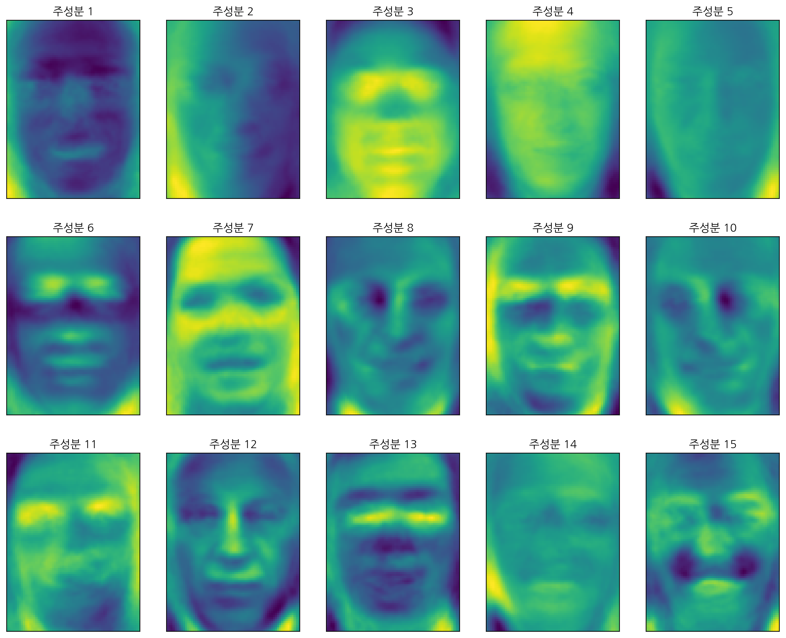
from matplotlib.offsetbox import OffsetImage, AnnotationBbox
image_shape = people.images[0].shape
plt.figure(figsize=(20, 3))
ax = plt.gca()
imagebox = OffsetImage(people.images[0], zoom=2, cmap="gray")
ab = AnnotationBbox(imagebox, (.05, 0.4), pad=0.0, xycoords='data')
ax.add_artist(ab)
for i in range(4):
imagebox = OffsetImage(pca.components_[i].reshape(image_shape), zoom=2,
cmap="viridis")
ab = AnnotationBbox(imagebox, (.285 + .2 * i, 0.4),
pad=0.0, xycoords='data')
ax.add_artist(ab)
if i == 0:
plt.text(.155, .3, 'x_{} *'.format(i), fontdict={'fontsize': 30})
else:
plt.text(.145 + .2 * i, .3, '+ x_{} *'.format(i),
fontdict={'fontsize': 30})
plt.text(.95, .3, '+ ...', fontdict={'fontsize': 30})
plt.rc('text')
plt.text(.12, .3, '=', fontdict={'fontsize': 30})
plt.axis("off")
plt.show()
plt.close()
plt.rc('text')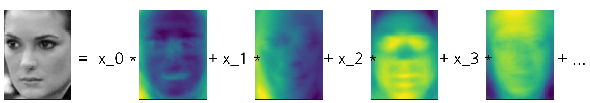
mglearn.plots.plot_pca_faces(X_train, X_test, image_shape)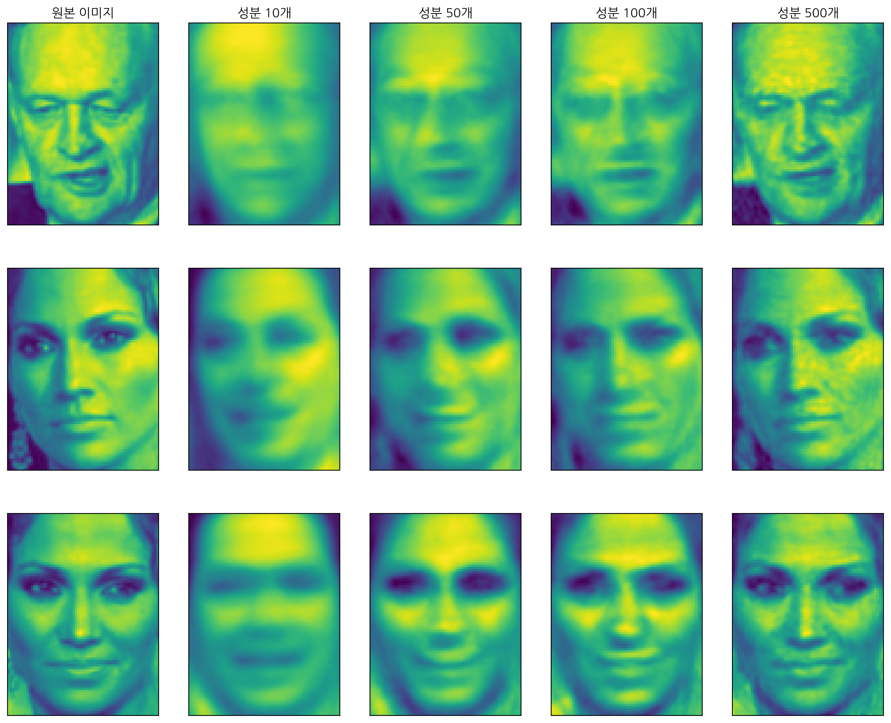
mglearn.discrete_scatter(X_train_pca[:, 0], X_train_pca[:, 1], y_train)
plt.xlabel("첫 번째 주성분")
plt.ylabel("두 번째 주성분")
plt.show() # 책에는 없음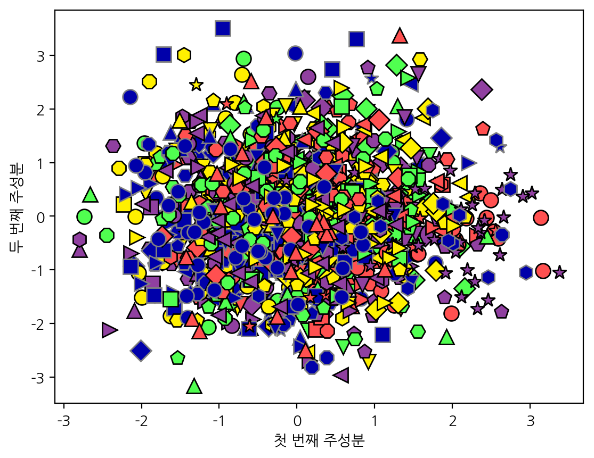
NMF (음수 미포함 행렬 분해)
인위적 데이터에 NMF 적용하기
mglearn.plots.plot_nmf_illustration()얼굴 이미지에 NMF 적용하기
mglearn.plots.plot_nmf_faces(X_train, X_test[:3], image_shape)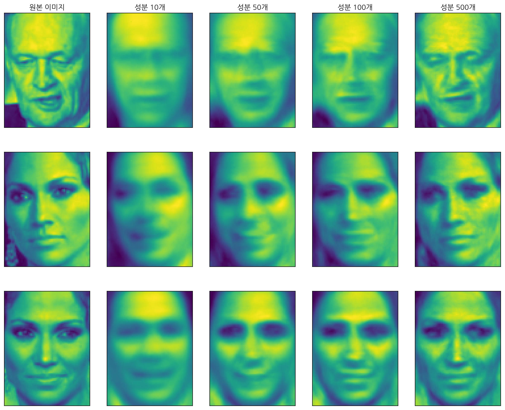
from sklearn.decomposition import NMF
nmf = NMF(n_components=15, init='nndsvd', random_state=0, max_iter=1000, tol=1e-2)
nmf.fit(X_train)
X_train_nmf = nmf.transform(X_train)
X_test_nmf = nmf.transform(X_test)
fig, axes = plt.subplots(3, 5, figsize=(15, 12),
subplot_kw={'xticks': (), 'yticks': ()})
for i, (component, ax) in enumerate(zip(nmf.components_, axes.ravel())):
ax.imshow(component.reshape(image_shape))
ax.set_title("성분 {}".format(i))compn = 3
# 4번째 성분으로 정렬하여 처음 10개 이미지를 출력합니다
inds = np.argsort(X_train_nmf[:, compn])[::-1]
fig, axes = plt.subplots(2, 5, figsize=(15, 8),
subplot_kw={'xticks': (), 'yticks': ()})
for i, (ind, ax) in enumerate(zip(inds, axes.ravel())):
ax.imshow(X_train[ind].reshape(image_shape))
compn = 7
# 8번째 성분으로 정렬하여 처음 10개 이미지를 출력합니다
inds = np.argsort(X_train_nmf[:, compn])[::-1]
fig, axes = plt.subplots(2, 5, figsize=(15, 8),
subplot_kw={'xticks': (), 'yticks': ()})
for i, (ind, ax) in enumerate(zip(inds, axes.ravel())):
ax.imshow(X_train[ind].reshape(image_shape))S = mglearn.datasets.make_signals()
plt.figure(figsize=(6, 1))
plt.plot(S, '-')
plt.xlabel("시간")
plt.ylabel("신호")
plt.margins(0)# 원본 데이터를 사용해 100개의 측정 데이터를 만듭니다
A = np.random.RandomState(0).uniform(size=(100, 3))
X = np.dot(S, A.T)
print("측정 데이터 형태:", X.shape)측정 데이터 형태: (2000, 100)nmf = NMF(n_components=3, init='nndsvd', random_state=42, max_iter=1000, tol=1e-2)
S_ = nmf.fit_transform(X)
print("복원한 신호 데이터 형태:", S_.shape)복원한 신호 데이터 형태: (2000, 3)pca = PCA(n_components=3)
H = pca.fit_transform(X)models = [X, S, S_, H]
names = ['측정 신호 (처음 3개)',
'원본 신호',
'NMF로 복원한 신호',
'PCA로 복원한 신호']
fig, axes = plt.subplots(4, figsize=(8, 4), gridspec_kw={'hspace': .5},
subplot_kw={'xticks': (), 'yticks': ()})
for model, name, ax in zip(models, names, axes):
ax.set_title(name)
ax.plot(model[:, :3], '-')
ax.margins(0)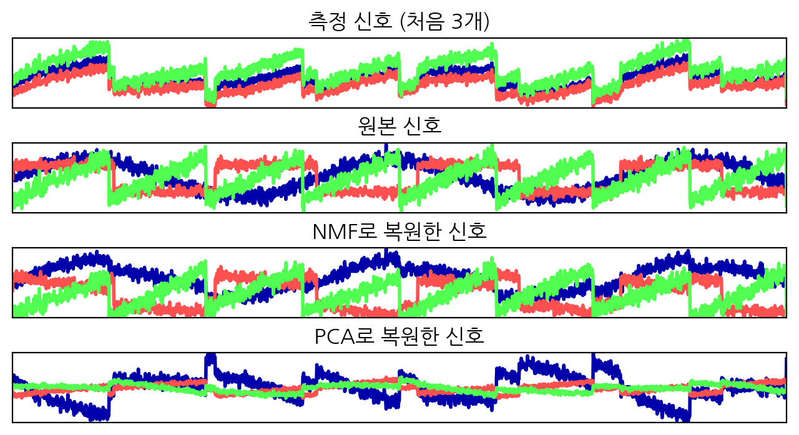
t-SNE를 이용한 매니폴드 학습
from sklearn.datasets import load_digits
digits = load_digits()
fig, axes = plt.subplots(2, 5, figsize=(10, 5),
subplot_kw={'xticks':(), 'yticks': ()})
for ax, img in zip(axes.ravel(), digits.images):
ax.imshow(img)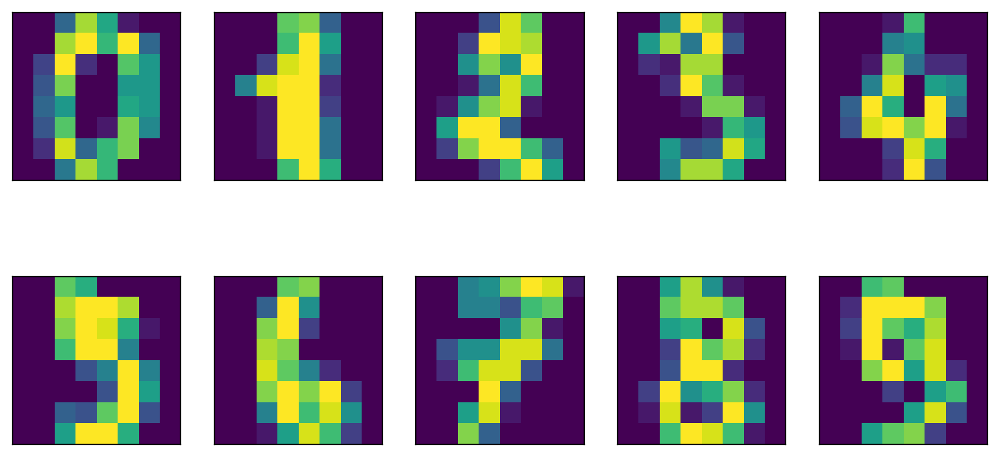
# PCA 모델을 생성합니다
pca = PCA(n_components=2)
pca.fit(digits.data)
# 처음 두 개의 주성분으로 숫자 데이터를 변환합니다
digits_pca = pca.transform(digits.data)
colors = ["#476A2A", "#7851B8", "#BD3430", "#4A2D4E", "#875525",
"#A83683", "#4E655E", "#853541", "#3A3120","#535D8E"]
plt.figure(figsize=(10, 10))
plt.xlim(digits_pca[:, 0].min(), digits_pca[:, 0].max())
plt.ylim(digits_pca[:, 1].min(), digits_pca[:, 1].max())
for i in range(len(digits.data)):
# 숫자 텍스트를 이용해 산점도를 그립니다
plt.text(digits_pca[i, 0], digits_pca[i, 1], str(digits.target[i]),
color = colors[digits.target[i]],
fontdict={'weight': 'bold', 'size': 9})
plt.xlabel("첫 번째 주성분")
plt.ylabel("두 번째 주성분")
plt.show() # 책에는 없음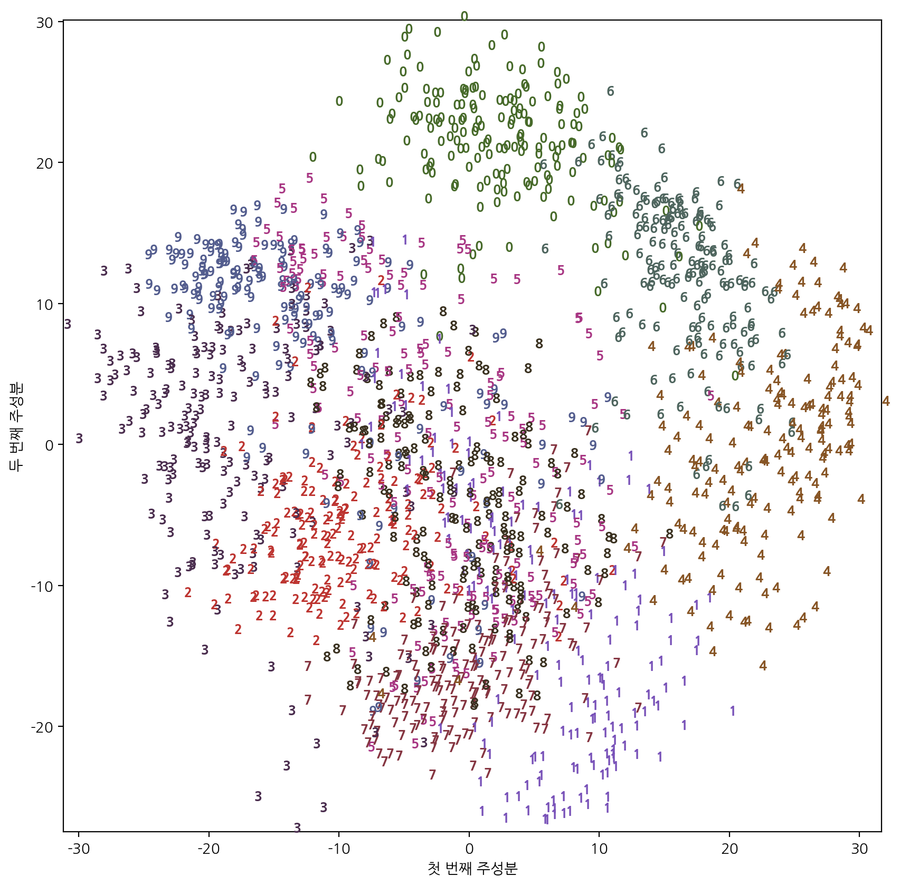
# TSNE의 init 매개변수가 1.2버전에서 'random'에서 'pca'로 바뀔 예정입니다.
# 경고를 피하기 위해 다음 코드를 추가합니다.
import warnings
warnings.filterwarnings("ignore", category=FutureWarning)
from sklearn.manifold import TSNE
tsne = TSNE(random_state=42)
# TSNE에는 transform 메소드가 없으므로 대신 fit_transform을 사용합니다
digits_tsne = tsne.fit_transform(digits.data)plt.figure(figsize=(10, 10))
plt.xlim(digits_tsne[:, 0].min(), digits_tsne[:, 0].max() + 1)
plt.ylim(digits_tsne[:, 1].min(), digits_tsne[:, 1].max() + 1)
for i in range(len(digits.data)):
# 숫자 텍스트를 이용해 산점도를 그립니다
plt.text(digits_tsne[i, 0], digits_tsne[i, 1], str(digits.target[i]),
color = colors[digits.target[i]],
fontdict={'weight': 'bold', 'size': 9})
plt.xlabel("t-SNE 특성 0")
plt.ylabel("t-SNE 특성 1")
plt.show() # 책에는 없음군집
k-평균 군집
mglearn.plots.plot_kmeans_algorithm()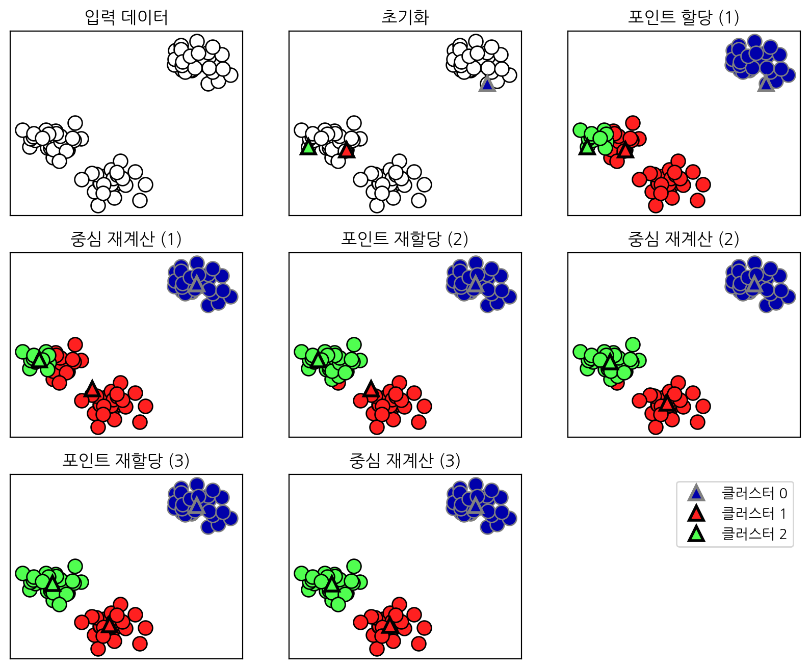
mglearn.plots.plot_kmeans_boundaries()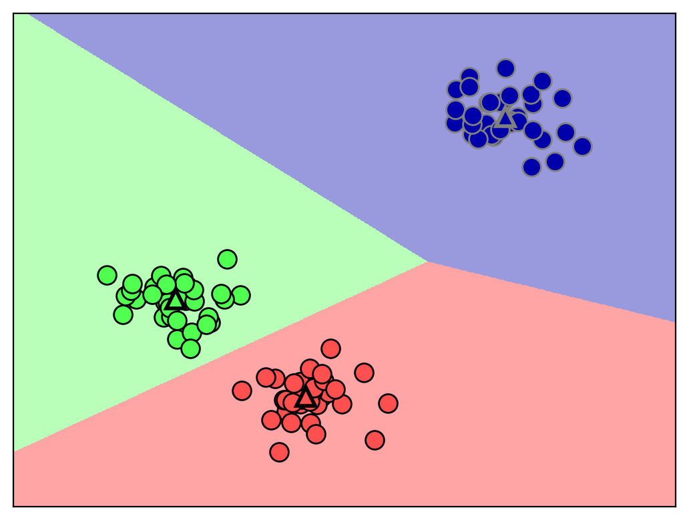
from sklearn.datasets import make_blobs
from sklearn.cluster import KMeans
# 인위적으로 2차원 데이터를 생성합니다
X, y = make_blobs(random_state=1)
# 군집 모델을 만듭니다
kmeans = KMeans(n_clusters=3)
kmeans.fit(X)KMeans(n_clusters=3)In a Jupyter environment, please rerun this cell to show the HTML representation or trust the notebook.
On GitHub, the HTML representation is unable to render, please try loading this page with nbviewer.org.
KMeans(n_clusters=3)
print(kmeans.labels_)[0 1 1 1 2 2 2 1 0 0 1 1 2 0 2 2 2 0 1 1 2 1 2 0 1 2 2 0 0 2 0 0 2 0 1 2 1
1 1 2 2 1 0 1 1 2 0 0 0 0 1 2 2 2 0 2 1 1 0 0 1 2 2 1 1 2 0 2 0 1 1 1 2 0
0 1 2 2 0 1 0 1 1 2 0 0 0 0 1 0 2 0 0 1 1 2 2 0 2 0]print(kmeans.predict(X))[0 1 1 1 2 2 2 1 0 0 1 1 2 0 2 2 2 0 1 1 2 1 2 0 1 2 2 0 0 2 0 0 2 0 1 2 1
1 1 2 2 1 0 1 1 2 0 0 0 0 1 2 2 2 0 2 1 1 0 0 1 2 2 1 1 2 0 2 0 1 1 1 2 0
0 1 2 2 0 1 0 1 1 2 0 0 0 0 1 0 2 0 0 1 1 2 2 0 2 0]mglearn.discrete_scatter(X[:, 0], X[:, 1], kmeans.labels_, markers='o')
mglearn.discrete_scatter(
kmeans.cluster_centers_[:, 0], kmeans.cluster_centers_[:, 1], [0, 1, 2],
markers='^', markeredgewidth=2)
plt.show() # 책에는 없음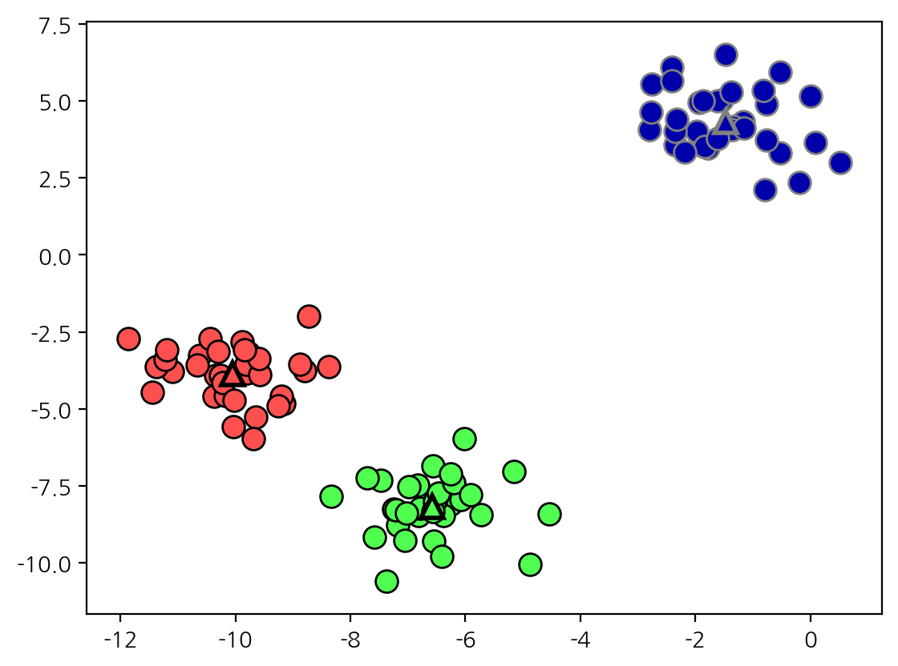
fig, axes = plt.subplots(1, 2, figsize=(10, 5))
# 두 개의 클러스터 중심을 사용합니다
kmeans = KMeans(n_clusters=2)
kmeans.fit(X)
assignments = kmeans.labels_
mglearn.discrete_scatter(X[:, 0], X[:, 1], assignments, ax=axes[0])
# 다섯 개의 클러스터 중심을 사용합니다
kmeans = KMeans(n_clusters=5)
kmeans.fit(X)
assignments = kmeans.labels_
mglearn.discrete_scatter(X[:, 0], X[:, 1], assignments, ax=axes[1])
plt.show() # 책에는 없음
k-평균 알고리즘이 실패하는 경우
X_varied, y_varied = make_blobs(n_samples=200,
cluster_std=[1.0, 2.5, 0.5],
random_state=170)
y_pred = KMeans(n_clusters=3, random_state=0).fit_predict(X_varied)
mglearn.discrete_scatter(X_varied[:, 0], X_varied[:, 1], y_pred)
plt.legend(["클러스터 0", "클러스터 1", "클러스터 2"], loc='best')
plt.xlabel("특성 0")
plt.ylabel("특성 1")
plt.show() # 책에는 없음# 무작위로 클러스터 데이터 생성합니다
X, y = make_blobs(random_state=170, n_samples=600)
rng = np.random.RandomState(74)
# 데이터가 길게 늘어지도록 변경합니다
transformation = rng.normal(size=(2, 2))
X = np.dot(X, transformation)
# 세 개의 클러스터로 데이터에 KMeans 알고리즘을 적용합니다
kmeans = KMeans(n_clusters=3)
kmeans.fit(X)
y_pred = kmeans.predict(X)
# 클러스터 할당과 클러스터 중심을 나타냅니다
mglearn.discrete_scatter(X[:, 0], X[:, 1], kmeans.labels_, markers='o')
mglearn.discrete_scatter(
kmeans.cluster_centers_[:, 0], kmeans.cluster_centers_[:, 1], [0, 1, 2],
markers='^', markeredgewidth=2)
plt.xlabel("특성 0")
plt.ylabel("특성 1")
plt.show() # 책에는 없음# two_moons 데이터를 생성합니다(이번에는 노이즈를 조금만 넣습니다)
from sklearn.datasets import make_moons
X, y = make_moons(n_samples=200, noise=0.05, random_state=0)
# 두 개의 클러스터로 데이터에 KMeans 알고리즘을 적용합니다
kmeans = KMeans(n_clusters=2)
kmeans.fit(X)
y_pred = kmeans.predict(X)
# 클러스터 할당과 클러스터 중심을 표시합니다
plt.scatter(X[:, 0], X[:, 1], c=y_pred, cmap=mglearn.cm2, s=60, edgecolors='k')
plt.scatter(kmeans.cluster_centers_[:, 0], kmeans.cluster_centers_[:, 1],
marker='^', c=[mglearn.cm2(0), mglearn.cm2(1)], s=100, linewidth=2, edgecolors='k')
plt.xlabel("특성 0")
plt.ylabel("특성 1")Text(0, 0.5, '특성 1')벡터 양자화 또는 분해 메소드로서의 k-평균
X_train, X_test, y_train, y_test = train_test_split(
X_people, y_people, stratify=y_people, random_state=42)
nmf = NMF(n_components=100, init='nndsvd', max_iter=1000, tol=1e-2, random_state=0)
nmf.fit(X_train)
pca = PCA(n_components=100, random_state=0)
pca.fit(X_train)
kmeans = KMeans(n_clusters=100, random_state=0)
kmeans.fit(X_train)
X_reconstructed_pca = pca.inverse_transform(pca.transform(X_test))
X_reconstructed_kmeans = kmeans.cluster_centers_[kmeans.predict(X_test)]
X_reconstructed_nmf = np.dot(nmf.transform(X_test), nmf.components_)fig, axes = plt.subplots(3, 5, figsize=(8, 8), subplot_kw={'xticks': (), 'yticks': ()})
fig.suptitle("추출한 성분")
for ax, comp_kmeans, comp_pca, comp_nmf in zip(
axes.T, kmeans.cluster_centers_, pca.components_, nmf.components_):
ax[0].imshow(comp_kmeans.reshape(image_shape))
ax[1].imshow(comp_pca.reshape(image_shape), cmap='viridis')
ax[2].imshow(comp_nmf.reshape(image_shape))
axes[0, 0].set_ylabel("kmeans")
axes[1, 0].set_ylabel("pca")
axes[2, 0].set_ylabel("nmf")
fig, axes = plt.subplots(4, 5, subplot_kw={'xticks': (), 'yticks': ()},
figsize=(8, 8))
fig.suptitle("재구성")
for ax, orig, rec_kmeans, rec_pca, rec_nmf in zip(
axes.T, X_test, X_reconstructed_kmeans, X_reconstructed_pca,
X_reconstructed_nmf):
ax[0].imshow(orig.reshape(image_shape))
ax[1].imshow(rec_kmeans.reshape(image_shape))
ax[2].imshow(rec_pca.reshape(image_shape))
ax[3].imshow(rec_nmf.reshape(image_shape))
axes[0, 0].set_ylabel("원본")
axes[1, 0].set_ylabel("kmeans")
axes[2, 0].set_ylabel("pca")
axes[3, 0].set_ylabel("nmf")
plt.show() # 책에는 없음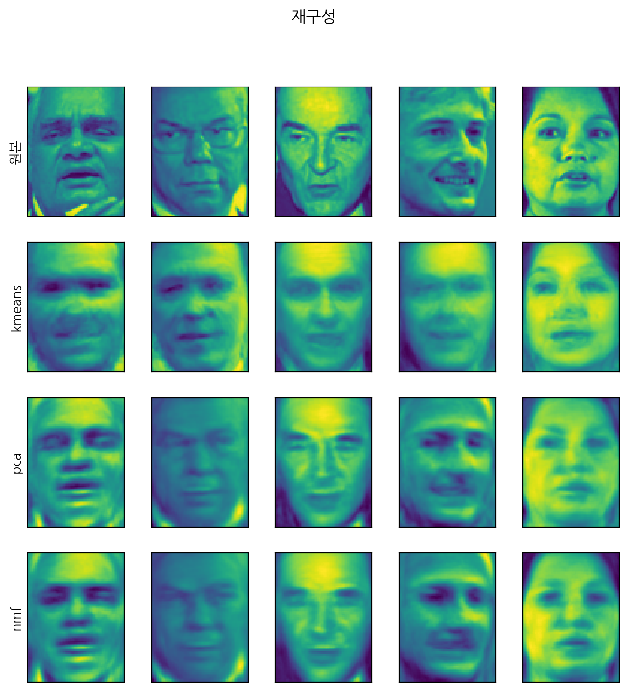
X, y = make_moons(n_samples=200, noise=0.05, random_state=0)
kmeans = KMeans(n_clusters=10, random_state=0)
kmeans.fit(X)
y_pred = kmeans.predict(X)
plt.scatter(X[:, 0], X[:, 1], c=y_pred, s=60, cmap='Paired', edgecolors='black')
plt.scatter(kmeans.cluster_centers_[:, 0], kmeans.cluster_centers_[:, 1], s=60,
marker='^', c=range(kmeans.n_clusters), linewidth=2, cmap='Paired', edgecolors='black')
plt.xlabel("특성 0")
plt.ylabel("특성 1")
print("클러스터 레이블:\n", y_pred)클러스터 레이블:
[8 4 6 3 1 1 5 2 8 4 9 2 1 4 7 5 0 2 0 7 1 2 0 4 9 6 1 1 6 0 8 9 2 6 8 1 2
5 3 6 2 7 8 6 4 9 5 7 6 2 7 2 1 3 4 8 0 4 0 9 2 3 1 8 4 3 9 4 9 3 2 3 2 6
2 3 6 8 0 2 1 9 2 1 6 9 5 9 2 1 0 5 1 7 1 1 4 2 3 6 4 1 9 5 3 6 3 7 4 0 7
9 9 3 8 4 8 1 2 8 8 7 6 9 6 7 5 6 4 1 5 7 3 6 4 4 4 3 1 8 6 6 0 9 7 5 6 4
0 6 2 4 8 0 2 9 4 2 0 0 6 4 0 4 2 1 0 2 4 2 0 3 3 7 6 2 1 7 7 0 4 3 1 4 1
0 9 2 3 7 3 0 8 5 6 7 1 6 9 4]
distance_features = kmeans.transform(X)
print("클러스터 거리 데이터의 형태:", distance_features.shape)
print("클러스터 거리:\n", distance_features)클러스터 거리 데이터의 형태: (200, 10)
클러스터 거리:
[[0.537 1.15 0.932 ... 1.48 0.003 1.077]
[1.741 0.606 1.007 ... 2.529 1.208 2.237]
[0.757 1.931 0.916 ... 0.783 0.876 0.718]
...
[0.927 1.738 0.579 ... 1.115 0.834 1.041]
[0.323 1.976 1.479 ... 0.814 0.846 0.284]
[1.633 0.472 1.023 ... 2.466 1.098 2.148]]병합 군집
mglearn.plots.plot_agglomerative_algorithm()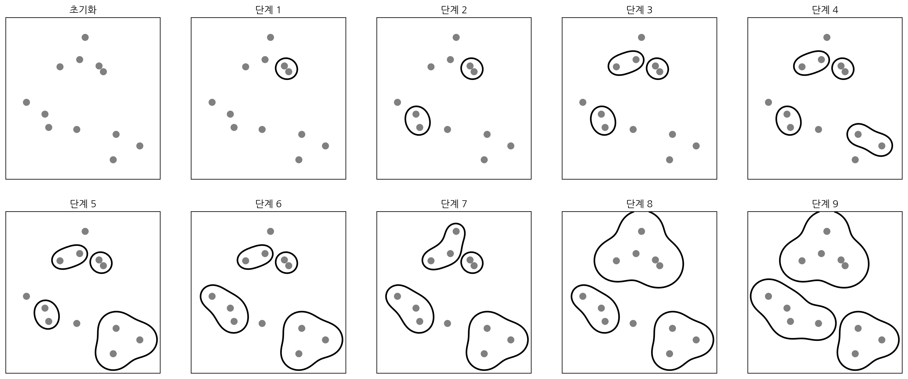
from sklearn.cluster import AgglomerativeClustering
X, y = make_blobs(random_state=1)
agg = AgglomerativeClustering(n_clusters=3)
assignment = agg.fit_predict(X)
mglearn.discrete_scatter(X[:, 0], X[:, 1], assignment)
plt.legend(["클러스터 0", "클러스터 1", "클러스터 2"], loc="best")
plt.xlabel("특성 0")
plt.ylabel("특성 1")Text(0, 0.5, '특성 1')계층적 군집과 덴드로그램(dendrograms)
mglearn.plots.plot_agglomerative()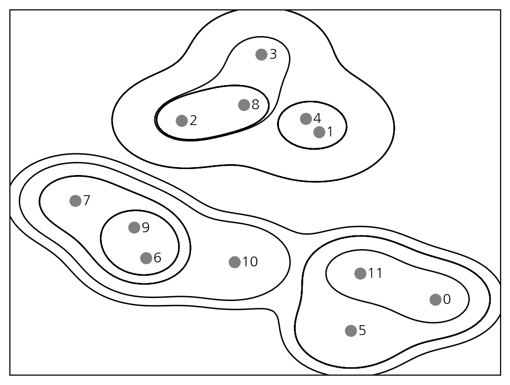
# SciPy에서 ward 군집 함수와 덴드로그램 함수를 임포트합니다
from scipy.cluster.hierarchy import dendrogram, ward
X, y = make_blobs(random_state=0, n_samples=12)
# 데이터 배열 X 에 ward 함수를 적용합니다
# SciPy의 ward 함수는 병합 군집을 수행할 때 생성된
# 거리 정보가 담긴 배열을 리턴합니다
linkage_array = ward(X)
# 클러스터 간의 거리 정보가 담긴 linkage_array를 사용해 덴드로그램을 그립니다
dendrogram(linkage_array)
# 두 개와 세 개의 클러스터를 구분하는 커트라인을 표시합니다
ax = plt.gca()
bounds = ax.get_xbound()
ax.plot(bounds, [7.25, 7.25], '--', c='k')
ax.plot(bounds, [4, 4], '--', c='k')
ax.text(bounds[1], 7.25, ' 두 개 클러스터', va='center', fontdict={'size': 15})
ax.text(bounds[1], 4, ' 세 개 클러스터', va='center', fontdict={'size': 15})
plt.xlabel("샘플 번호")
plt.ylabel("클러스터 거리")Text(0, 0.5, '클러스터 거리')DBSCAN
from sklearn.cluster import DBSCAN
X, y = make_blobs(random_state=0, n_samples=12)
dbscan = DBSCAN()
clusters = dbscan.fit_predict(X)
print("클러스터 레이블:\n", clusters)클러스터 레이블:
[-1 -1 -1 -1 -1 -1 -1 -1 -1 -1 -1 -1]mglearn.plots.plot_dbscan()min_samples: 2 eps: 1.000000 클러스터: [-1 0 0 -1 0 -1 1 1 0 1 -1 -1]
min_samples: 2 eps: 1.500000 클러스터: [0 1 1 1 1 0 2 2 1 2 2 0]
min_samples: 2 eps: 2.000000 클러스터: [0 1 1 1 1 0 0 0 1 0 0 0]
min_samples: 2 eps: 3.000000 클러스터: [0 0 0 0 0 0 0 0 0 0 0 0]
min_samples: 3 eps: 1.000000 클러스터: [-1 0 0 -1 0 -1 1 1 0 1 -1 -1]
min_samples: 3 eps: 1.500000 클러스터: [0 1 1 1 1 0 2 2 1 2 2 0]
min_samples: 3 eps: 2.000000 클러스터: [0 1 1 1 1 0 0 0 1 0 0 0]
min_samples: 3 eps: 3.000000 클러스터: [0 0 0 0 0 0 0 0 0 0 0 0]
min_samples: 5 eps: 1.000000 클러스터: [-1 -1 -1 -1 -1 -1 -1 -1 -1 -1 -1 -1]
min_samples: 5 eps: 1.500000 클러스터: [-1 0 0 0 0 -1 -1 -1 0 -1 -1 -1]
min_samples: 5 eps: 2.000000 클러스터: [-1 0 0 0 0 -1 -1 -1 0 -1 -1 -1]
min_samples: 5 eps: 3.000000 클러스터: [0 0 0 0 0 0 0 0 0 0 0 0]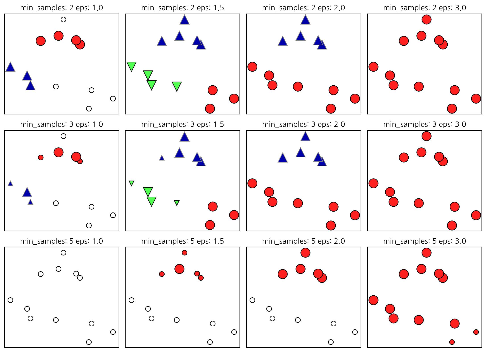
X, y = make_moons(n_samples=200, noise=0.05, random_state=0)
# 평균이 0, 분산이 1이 되도록 데이터의 스케일을 조정합니다
scaler = StandardScaler()
scaler.fit(X)
X_scaled = scaler.transform(X)
dbscan = DBSCAN()
clusters = dbscan.fit_predict(X_scaled)
# 클러스터 할당을 표시합니다
plt.scatter(X_scaled[:, 0], X_scaled[:, 1], c=clusters, cmap=mglearn.cm2, s=60, edgecolors='black')
plt.xlabel("특성 0")
plt.ylabel("특성 1")
plt.show() # 책에는 없음군집 알고리즘의 비교와 평가
타겟값으로 군집 평가하기
from sklearn.metrics.cluster import adjusted_rand_score
X, y = make_moons(n_samples=200, noise=0.05, random_state=0)
# 평균이 0, 분산이 1이 되도록 데이터의 스케일을 조정합니다
scaler = StandardScaler()
scaler.fit(X)
X_scaled = scaler.transform(X)
fig, axes = plt.subplots(1, 4, figsize=(15, 3),
subplot_kw={'xticks': (), 'yticks': ()})
# 사용할 알고리즘 모델을 리스트로 만듭니다
algorithms = [KMeans(n_clusters=2), AgglomerativeClustering(n_clusters=2),
DBSCAN()]
# 비교를 위해 무작위로 클러스터 할당을 합니다
random_state = np.random.RandomState(seed=0)
random_clusters = random_state.randint(low=0, high=2, size=len(X))
# 무작위 할당한 클러스터를 그립니다
axes[0].scatter(X_scaled[:, 0], X_scaled[:, 1], c=random_clusters,
cmap=mglearn.cm3, s=60, edgecolors='black')
axes[0].set_title("무작위 할당 - ARI: {:.2f}".format(
adjusted_rand_score(y, random_clusters)))
for ax, algorithm in zip(axes[1:], algorithms):
# 클러스터 할당과 클러스터 중심을 그립니다
clusters = algorithm.fit_predict(X_scaled)
ax.scatter(X_scaled[:, 0], X_scaled[:, 1], c=clusters,
cmap=mglearn.cm3, s=60, edgecolors='black')
ax.set_title("{} - ARI: {:.2f}".format(algorithm.__class__.__name__,
adjusted_rand_score(y, clusters)))from sklearn.metrics import accuracy_score
# 포인트가 클러스터로 나뉜 두 가지 경우
clusters1 = [0, 0, 1, 1, 0]
clusters2 = [1, 1, 0, 0, 1]
# 모든 레이블이 달라졌으므로 정확도는 0입니다
print("정확도: {:.2f}".format(accuracy_score(clusters1, clusters2)))
# 같은 포인트가 클러스터에 모였으므로 ARI는 1입니다
print("ARI: {:.2f}".format(adjusted_rand_score(clusters1, clusters2)))정확도: 0.00
ARI: 1.00타겟값 없이 군집 평가하기
from sklearn.metrics.cluster import silhouette_score
X, y = make_moons(n_samples=200, noise=0.05, random_state=0)
# 평균이 0, 분산이 1이 되도록 데이터의 스케일을 조정합니다
scaler = StandardScaler()
scaler.fit(X)
X_scaled = scaler.transform(X)
fig, axes = plt.subplots(1, 4, figsize=(15, 3),
subplot_kw={'xticks': (), 'yticks': ()})
# 비교를 위해 무작위로 클러스터 할당을 합니다
random_state = np.random.RandomState(seed=0)
random_clusters = random_state.randint(low=0, high=2, size=len(X))
# 무작위 할당한 클러스터를 그립니다
axes[0].scatter(X_scaled[:, 0], X_scaled[:, 1], c=random_clusters,
cmap=mglearn.cm3, s=60, edgecolors='black')
axes[0].set_title("무작위 할당: {:.2f}".format(
silhouette_score(X_scaled, random_clusters)))
algorithms = [KMeans(n_clusters=2), AgglomerativeClustering(n_clusters=2),
DBSCAN()]
for ax, algorithm in zip(axes[1:], algorithms):
clusters = algorithm.fit_predict(X_scaled)
# 클러스터 할당과 클러스터 중심을 그립니다
ax.scatter(X_scaled[:, 0], X_scaled[:, 1], c=clusters, cmap=mglearn.cm3,
s=60, edgecolors='black')
ax.set_title("{} : {:.2f}".format(algorithm.__class__.__name__,
silhouette_score(X_scaled, clusters)))얼굴 데이터셋으로 군집 알고리즘 비교
# LFW 데이터에서 고유얼굴을 찾은 다음 데이터를 변환합니다
from sklearn.decomposition import PCA
pca = PCA(n_components=100, whiten=True, random_state=0)
X_pca = pca.fit_transform(X_people)DBSCAN으로 얼굴 데이터셋 분석
# 기본 매개변수로 DBSCAN을 적용합니다
dbscan = DBSCAN()
labels = dbscan.fit_predict(X_pca)
print("고유한 레이블:", np.unique(labels))고유한 레이블: [-1]dbscan = DBSCAN(min_samples=3)
labels = dbscan.fit_predict(X_pca)
print("고유한 레이블:", np.unique(labels))고유한 레이블: [-1]dbscan = DBSCAN(min_samples=3, eps=15)
labels = dbscan.fit_predict(X_pca)
print("고유한 레이블:", np.unique(labels))고유한 레이블: [-1 0]# 잡음 포인트와 클러스터에 속한 포인트 수를 셉니다.
# bincount는 음수를 받을 수 없어서 labels에 1을 더했습니다.
# 반환값의 첫 번째 원소는 잡음 포인트의 수입니다.
print("클러스터별 포인트 수:", np.bincount(labels + 1))클러스터별 포인트 수: [ 37 2026]noise = X_people[labels==-1]
fig, axes = plt.subplots(3, 9, subplot_kw={'xticks': (), 'yticks': ()},
figsize=(12, 4))
for image, ax in zip(noise, axes.ravel()):
ax.imshow(image.reshape(image_shape), vmin=0, vmax=1)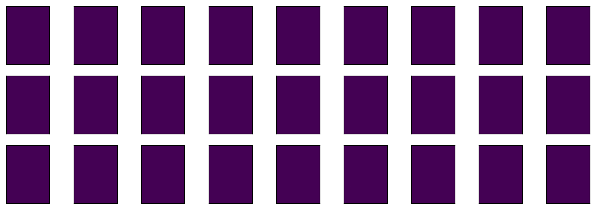
for eps in [1, 3, 5, 7, 9, 11, 13]:
print("\neps=", eps)
dbscan = DBSCAN(eps=eps, min_samples=3)
labels = dbscan.fit_predict(X_pca)
print("클러스터 수:", len(np.unique(labels)))
print("클러스터 크기:", np.bincount(labels + 1))
eps= 1
클러스터 수: 1
클러스터 크기: [2063]
eps= 3
클러스터 수: 1
클러스터 크기: [2063]
eps= 5
클러스터 수: 2
클러스터 크기: [2059 4]
eps= 7
클러스터 수: 8
클러스터 크기: [1954 75 4 14 6 4 3 3]
eps= 9
클러스터 수: 3
클러스터 크기: [1199 861 3]
eps= 11
클러스터 수: 2
클러스터 크기: [ 403 1660]
eps= 13
클러스터 수: 2
클러스터 크기: [ 119 1944]dbscan = DBSCAN(min_samples=3, eps=7)
labels = dbscan.fit_predict(X_pca)
for cluster in range(max(labels) + 1):
mask = labels == cluster
n_images = np.sum(mask)
fig, axes = plt.subplots(1, 14, figsize=(14*1.5, 4),
subplot_kw={'xticks': (), 'yticks': ()})
i = 0
for image, label, ax in zip(X_people[mask], y_people[mask], axes):
ax.imshow(image.reshape(image_shape), vmin=0, vmax=1)
ax.set_title(people.target_names[label].split()[-1])
i += 1
for j in range(len(axes) - i):
axes[j+i].imshow(np.array([[1]*65]*87), vmin=0, vmax=1)
axes[j+i].axis('off')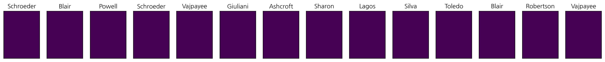
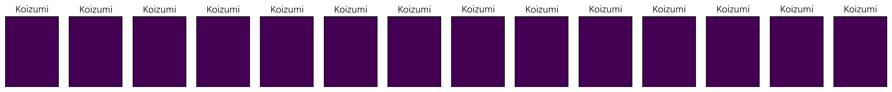
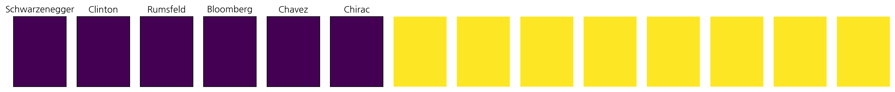

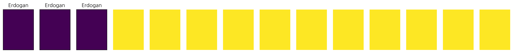
k-평균으로 얼굴 데이터셋 분석하기
n_clusters = 10
# k-평균으로 클러스터를 추출합니다
km = KMeans(n_clusters=n_clusters, random_state=0)
labels_km = km.fit_predict(X_pca)
print("k-평균의 클러스터 크기:", np.bincount(labels_km))k-평균의 클러스터 크기: [ 5 286 190 275 185 493 1 286 2 340]fig, axes = plt.subplots(2, 5, subplot_kw={'xticks': (), 'yticks': ()},
figsize=(12, 4))
for center, ax in zip(km.cluster_centers_, axes.ravel()):
ax.imshow(pca.inverse_transform(center).reshape(image_shape),
vmin=0, vmax=1)mglearn.plots.plot_kmeans_faces(km, pca, X_pca, X_people,
y_people, people.target_names)
병합 군집으로 얼굴 데이터셋 분석하기
# 병합 군집으로 클러스터를 추출합니다
agglomerative = AgglomerativeClustering(n_clusters=10)
labels_agg = agglomerative.fit_predict(X_pca)
print("병합 군집의 클러스터 크기:",
np.bincount(labels_agg))병합 군집의 클러스터 크기: [264 100 275 553 49 64 546 52 51 109]print("ARI: {:.2f}".format(adjusted_rand_score(labels_agg, labels_km)))ARI: 0.09linkage_array = ward(X_pca)
# 클러스터 사이의 거리가 담겨있는 linkage_array로 덴드로그램을 그립니다
plt.figure(figsize=(20, 5))
dendrogram(linkage_array, p=7, truncate_mode='level', no_labels=True)
plt.xlabel("샘플 번호")
plt.ylabel("클러스터 거리")
ax = plt.gca()
bounds = ax.get_xbound()
ax.plot(bounds, [36, 36], '--', c='k')n_clusters = 10
for cluster in range(n_clusters):
mask = labels_agg == cluster
fig, axes = plt.subplots(1, 10, subplot_kw={'xticks': (), 'yticks': ()},
figsize=(15, 8))
axes[0].set_ylabel(np.sum(mask))
for image, label, asdf, ax in zip(X_people[mask], y_people[mask],
labels_agg[mask], axes):
ax.imshow(image.reshape(image_shape), vmin=0, vmax=1)
ax.set_title(people.target_names[label].split()[-1],
fontdict={'fontsize': 9})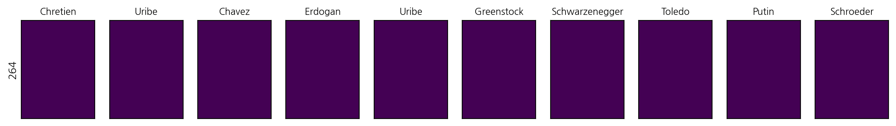

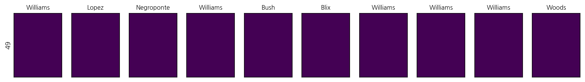
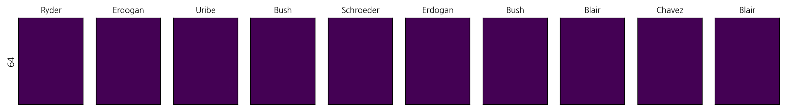
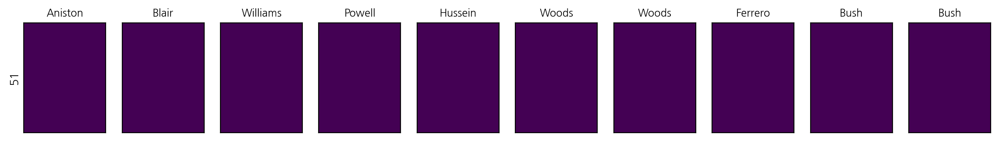
# 병합 군집으로 클러스터를 추출합니다
agglomerative = AgglomerativeClustering(n_clusters=40)
labels_agg = agglomerative.fit_predict(X_pca)
print("병합 군집의 클러스터 크기:", np.bincount(labels_agg))
n_clusters = 40
for cluster in [13, 16, 23, 38, 39]: # 흥미로운 클러스터 몇개를 골랐습니다
mask = labels_agg == cluster
fig, axes = plt.subplots(1, 15, subplot_kw={'xticks': (), 'yticks': ()},
figsize=(15, 8))
cluster_size = np.sum(mask)
axes[0].set_ylabel("#{}: {}".format(cluster, cluster_size))
for image, label, asdf, ax in zip(X_people[mask], y_people[mask],
labels_agg[mask], axes):
ax.imshow(image.reshape(image_shape), vmin=0, vmax=1)
ax.set_title(people.target_names[label].split()[-1],
fontdict={'fontsize': 9})
for i in range(cluster_size, 15):
axes[i].set_visible(False)병합 군집의 클러스터 크기: [139 35 23 2 111 39 106 33 5 161 60 41 70 17 30 20 134 40
23 38 56 264 4 35 44 16 29 135 25 37 42 34 3 17 31 3
21 27 76 37]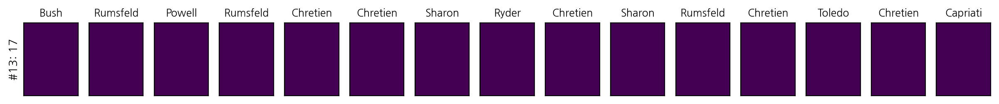
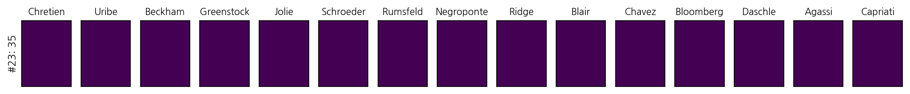
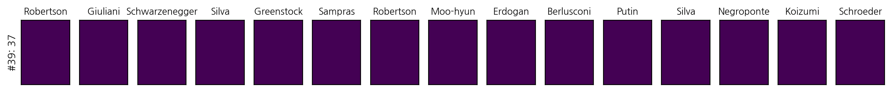